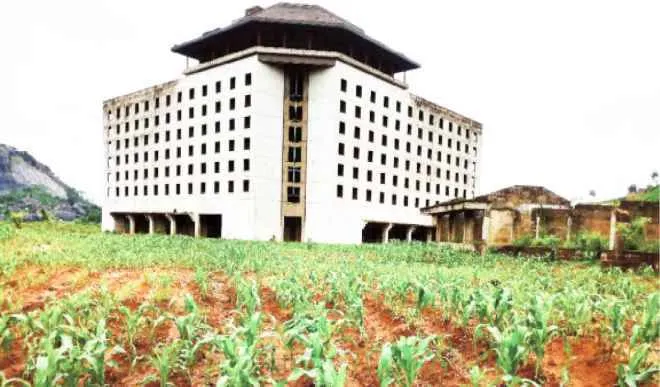

Public money remains at stake
Many projects consume budgetary allocations, land acquisitions, and local expectations before they are paused or left unfinished.
Public accountability • Nigeria
Naijastalled brings together public records, local reports, and citizen observations to make abandoned infrastructure easier to understand, track, and act on.

Featured Story
Once designed as a tourism and business hub, the project remains one of the clearest examples of how infrastructure plans can stall without a clear public follow-through.
Why this matters
Many projects consume budgetary allocations, land acquisitions, and local expectations before they are paused or left unfinished.
Vacant sites, rusted steel, and neglected facilities can affect roads, jobs, housing, and local confidence for years.
A central record makes it easier for journalists, researchers, civic groups, and citizens to compare cases and push for accountability.
Recent cases

Abuja • Planned as a flagship hospitality zone, now a visible symbol of stalled ambition.

Kogi • Long-running industrial venture with repeated delays and unclear completion timelines.

Lagos • A major public infrastructure site whose unfinished state draws national attention.
How the site helps
Browse projects by state, sector, or status to identify patterns and priority areas.
Review original purposes, delays, and current conditions across different cases.
Submit missing information, reports, or updates to strengthen public understanding.